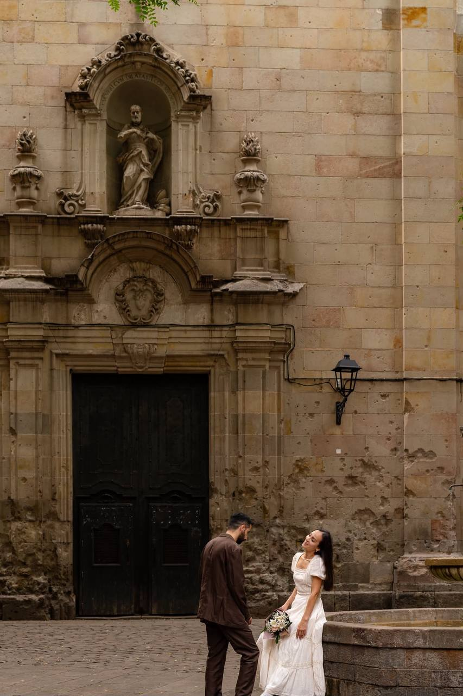

Travel story
He Asked in Barcelona


I thought we were going to Barcelona for tapas and Gaudi. I packed a white dress because it was the only thing in my closet that did not need ironing. That is the whole story of how I ended up accidentally dressed for my own engagement.
The morning
He was strangely insistent about waking up early, which should have been my first clue. This is a man who treats breakfast as a rumor. But there we were, walking through the Gothic Quarter before the shops had even pulled up their shutters, and he kept checking his jacket pocket like he had lost his passport.
We stopped in a small square with a fountain and an old church. The stone walls there are scarred and pitted, and it was so quiet that I could hear the water. He bought me flowers from a stand on the way, which I thought was just him being sweet.
The question
I was in the middle of saying something about where we should get coffee. He was not listening. He said my name, and then he said a lot of things I wish I could remember word for word, and then he was down on one knee on the cobblestones.
I said yes before he finished the sentence. Then I laughed, and then I cried, and then I laughed again because a man walking his dog started clapping.
The rest of the day
We walked for hours with no plan at all. We ended up under the Arc de Triomf, where I made him take about forty photos of me holding the flowers, because I wanted proof that the day had really happened.
We did eventually get the tapas. I do not remember what we ordered. I spent the whole dinner looking at my hand.
If you are planning one
Go early, before the city wakes up. Pick somewhere small and quiet over somewhere famous. And if your partner suddenly cares a lot about what time you leave the hotel, maybe wear something nice.
Barcelona, you will always be ours.